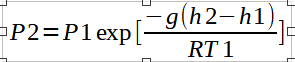
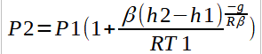
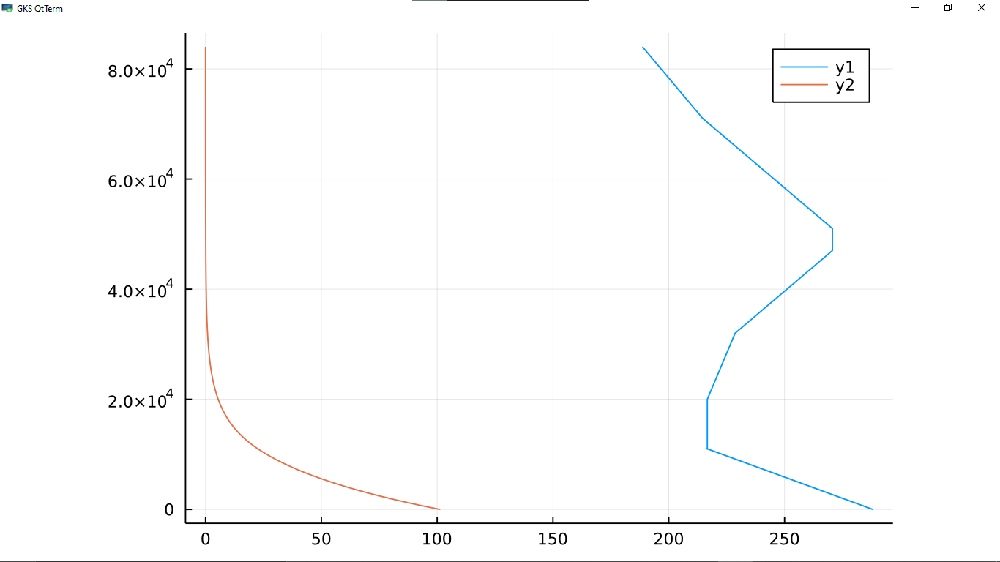

03/10/22
1. Introduction
In the preceding article we talked about temperature and pressure variations in the standard atmosphere. The International Standard Atmosphere (ISA) gives a description of how the pressure, temperature, density, and viscosity of the Earth’s atmosphere changes with altitude. We went on to derive the equations governing temperature and pressure variations with increase in geo-potential height, h.
In this article we will use the Julia programming language to create a working model of the standard atmosphere and plot the temperature and pressure variables against the geo-potential height.
1.1 Symbols and Constants
Symbols
h – Geo-potential Altitude
T – Absolute temperature
P – Pressure
β – Lapse rate
Constants
g – gravitational constant = 9.81 m/s2
R – Gas constant = 286.9 J/kg
Absolute zero = -273.15°C (0 K)
To= 15.0°C (288.15 K)
p0 = 101,325 N/m2
#1 Importing library and Declaration of Constants
To plot the data obtained from the calculations, we will use the Plots Library which is the simplest and most widely used plotting library in Julia. We will also declare our constants and assign values tusing Plots
# Constants
g = 9.807
R = 286.9
T0 = 288.15
P0 = 101.325
#2 Temperature Variation
As discussed in the preceding article, the temperature varies with altitude according to the equation,
T = Ta + β(h – ha)
We therefore create a function temperature with four arguments;
#Temprature Variation
function temperature(Ta::Float64, β::Float64, h::Int64, h0::Int64)
T = Ta + β*(h - h0)
return T
end
#3 Pressure Variation
We note that the variation of pressure with altitude is dependent upon the presence or absence of a non-zero temperature lapse rate. For isothermal layers(zero lapse rate), the pressure variation is given by,

For layers with a linear temperature gradient, the pressure varies according to the equation,

We therefore create a function pressure with two methods and use multiple dispatch to call the function depending on the arguments subs#Pressure Variation
function pressure(Pa::Float64, β::Float64, h::Int64, h0::Int64, Ta::Float64)
P = Pa*((1 + ((β*(h - h0)) / Ta))^(-g / ((R*β))))
return P
end
function pressure(Pa::Float64, h::Int64, h0::Int64, Ta::Float64)
P = Pa*ℯ^((-g*(h - h0)) / (R*Ta))
return P
end
#4 Array variables
In order to plot temperature and pressure variables against geo-potential altitude, we need to store the values of temperature and pressure in arrays. Hence, we will create three empty array variables for temperature, pressure, and geo-potential height respectively.
tempvar = []
pressurevar = []
hvar = []
Next, we will create two generic functions to calculate the values of pressure and temperature within a specified range(from the bottom of a layer to the top) and append them to our array variables. Since we have only two scenarios, an isothermal layer or a layer with a non-zero lapse rate, we will have to functions; a layer function, which will compute the variables of pressure and temperature for the layers with a non-zero lapse rate; and a pause function, which will compute pressure and temperature for the isothermal layers. These two functions are different in that we use two different methods of the same pressure function to calculate the pressure; hence multiple dispatch.
function layer(low::Int64, high::Int64, Tlow::Float64, β::Float64, Plow::Float64)
for h in low:high
temp = temperature(Tlow, β, h, low)
push!(tempvar, temp)
press = pressure(Plow, β, h, low, Tlow)
push!(pressurevar, press)
push!(hvar, h)
end
end
function pause(low::Int64, high::Int64, Tlow::Float64, β::Float64, Plow::Float64)
for h in low:high
temp = temperature(Tlow, β, h, low)
push!(tempvar, temp)
press = pressure(Plow, h, low, Tlow)
push!(pressurevar, press)
push!(hvar, h)
end
end
We now calculate the appropriate values of temperature and pressure for each layer and append them to the corresponding array variable. To do this, we call the appropriate function, layer function or pause function, and insert the specific values of the arguments for that lay#0 layer
layer(0, 11000, 288.15, -0.00650, 101.325)
#1 layer
pause(11001, 20000, tempvar[11000], 0.0, pressurevar[11000])
#2 layer
layer(20001, 32000, tempvar[20001], 0.001, pressurevar[20001])
#3 layer
layer(32001, 47000, tempvar[32001], 0.0028, pressurevar[32001])
#4 layer
pause(47001, 51000, tempvar[47001], 0.0, pressurevar[47001])
#5 layer
layer(51001, 71000, tempvar[51001], -0.0028, pressurevar[51001])
#6 layer
layer(71001, 84000, tempvar[71001], -0.002, pressurevar[71001])
We will have three arrays, height, temperature, and pressure, which we can then plot to visually represent the data obtained.
#5 Plotting
The first plot we can make is a plot of pressure and temperature against geo-potential height. The plot is shown below.
plot(tempvar, hvar)
plot!(pressurevar, hvar)

2. Conclusion
The International Standard Atmosphere is a model which has uses in countless applications. While charts of the atmosphere were once sufficient for engineers and pilots, modern flying machines encompass a lot of digital devices which either complement mechanical systems or replace them altogether. Having a computer model of the Standard Atmosphere is essential in the calibration of these digital devices and interfacing them with the mechanical systems. Thus, they are able to provide fast and reliable information on the atmospheric conditions in which the aircraft is operating.
If you enjoyed this article, be sure to give it a thumbs and hang around my blog for other interesting articles. You can link with me on my socials for further inquiry on the content presented here or A.O.B.